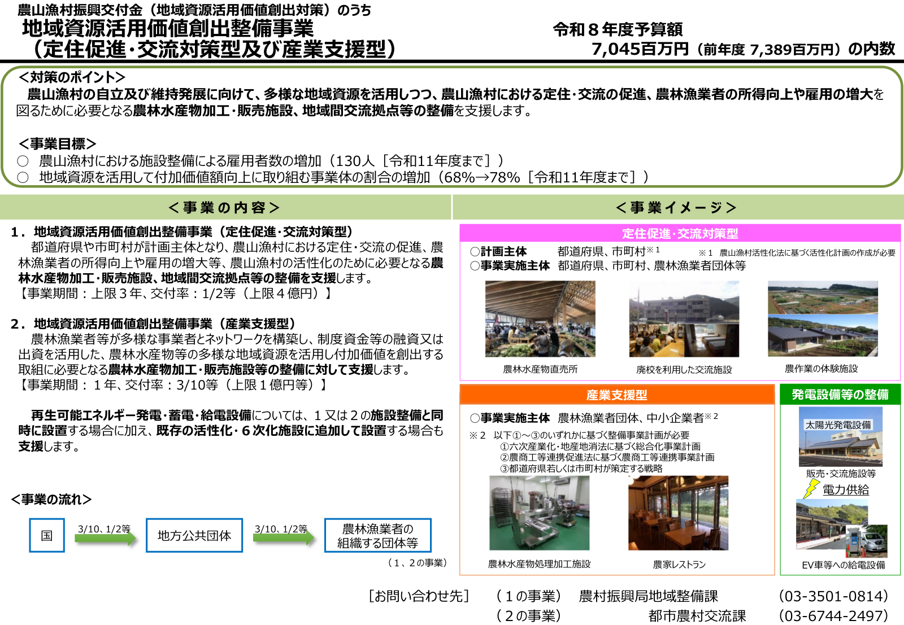

地域資源活用価値創出整備事業の要点（定住促進・交流対策型／産業支援型）
この記事でわかること
- 農山漁村振興交付金（地域資源活用価値創出対策）のうち、地域資源活用価値創出整備事業が、定住促進・交流対策型と産業支援型の二つの類型に分かれ、計画主体・実施主体・事業期間・交付率の上限などが異なること。
- 再生可能エネルギーの発電・蓄電・給電設備は、新規の施設整備と同時設置に加え、既存の活性化・六次産業化施設への追加設置も支援対象になりうること（詳細は要領・個別相談で確認）。
- 事業目標（雇用者数、付加価値向上に取り組む事業体の割合）と、令和8年度予算の内数（7,045百万円、前年度7,389百万円）の整理。
- 補助率・対象経費・計画要件・手続の正本は実施要領・交付要領・都道府県・地方農政局の案内で必ず確認すべきこと。
読了の目安：分
農山漁村振興交付金（地域資源活用価値創出対策）のうち「地域資源活用価値創出整備事業」について、定住促進・交流対策型と産業支援型の趣旨、支援内容、再エネルギー設備、事業目標、予算の内数、問い合わせ先を整理します。採択条件や様式の最終判断は、必ず最新の公示・要領と自治体・農政局の案内で確認してください。
概要
| 項目 | 内容 |
|---|---|
| 誰に | 農山漁村の活性化に向け、加工・販売施設や交流拠点の整備を検討する都道府県・市町村、農林漁業者団体、中小企業者など。類型ごとに計画主体・実施主体・必要な計画が異なります。 |
| 何を | 定住促進・交流対策型と産業支援型の支援内容の違い、再エネ設備の位置づけ、事業目標、令和8年度の予算内数、問い合わせ先の整理です。 |
| 詳細はどこで | 農林水産省「地域資源活用価値創出整備事業（定住促進・交流対策型）」、「農山漁村振興交付金のうち地域資源活用価値創出対策（旧農山漁村発イノベーション対策）」、「seibi-55.pdf（農林水産省）」、実施要領・ガイドブック、地方農政局への相談を参照してください。 |

制度上の位置づけ（対策のポイント）
本事業は、農山漁村の自立と維持発展に向け、多様な地域資源を活用しながら、定住・交流の促進、農林漁業者の所得向上、雇用の増大を図るために必要な農林水産物の加工・販売施設、地域間交流拠点等の整備を支援する枠組みです。農山漁村振興交付金の「地域資源活用価値創出対策」の中に位置づけられ、実施の設計が異なる二つの類型に分かれます。
事業の内容（二つの類型）
1. 定住促進・交流対策型（地域資源活用価値創出整備事業）
計画主体は都道府県又は市町村です。農山漁村における定住・交流の促進、農林漁業者の所得向上や雇用の増大など、農山漁村の活性化に必要な農林水産物の加工・販売施設、地域間交流拠点等の整備を支援します。条件の一例として、事業期間は上限3年、交付率は1/2等、事業費の上限は4億円です（「等」は区分・経費目により変動しうるため、要領で確認してください）。
整備の例として、農作業の体験施設、農林水産物の処理加工施設、農家レストラン、廃校を利用した交流施設、農林水産物直売所、発電設備、太陽光発電設備、電力供給、電気自動車等への給電設備などが挙げられます。
計画・主体の留意点：計画主体が都道府県・市町村である場合、農山漁村活性化法に基づく活性化計画の作成が必要です。事業実施主体の例として、都道府県・市町村、農林漁業者団体等が挙げられています。
2. 産業支援型（地域資源活用価値創出整備事業）
農林漁業者等が多様な事業者とネットワークを構築し、制度資金等の融資又は出資を活用して、農林水産物など多様な地域資源の付加価値創出に取り組むために必要な農林水産物の加工・販売施設等の整備を支援します。条件の一例として、事業期間は1年、交付率は3/10等、事業費の上限は1億円等です。
計画の要件：次のいずれかに基づく整備事業計画が必要です。
- 六次産業化・地産地消法に基づく総合化事業計画
- 農商工等連携促進法に基づく農商工等連携事業計画
- 都道府県又は市町村が策定する戦略
事業実施主体の例として、農林漁業者団体、中小企業者が挙げられています。
再生可能エネルギー関連設備について
再生可能エネルギーの発電・蓄電・給電設備は、次の二つのパターンで支援の対象になり得ます。
- 上記1又は2の施設整備と同時に設置する場合
- 既存の活性化・六次産業化施設に追加して設置する場合
設備種別・容量・接続・収益モデル・補助の対象経費などは、実施要領と個別の事前相談で確認してください。
事業目標
数値目標の一例は次のとおりです（指標の定義・測定方法は要領等で確認してください）。
- 雇用者数の増加：農山漁村における施設整備による雇用者数の増加として、130人（令和11年度まで）。
- 付加価値向上に取り組む事業体の割合：地域資源を活用して付加価値額向上に取り組む事業体の割合の増加として、68％から78％（令和11年度まで）。
予算の内数
令和8年度は7,045百万円（前年度 7,389百万円）の内数です。予算の計上区分や執行の詳細は、国会審議資料・省庁の説明資料とあわせて確認してください。
資金の流れ
国から地方公共団体、農林漁業者の組織する団体等へと交付が行われる流れが想定され、交付率の例として「3/10」「1/2」等が設定される場合があります。類型・事業区分ごとに経路や交付条件は異なるため、手続は担当窓口の案内に従ってください。
お問い合わせ先
- 定住促進・交流対策型（１の事業）：農林水産省 農村振興局 地域整備課 03-3501-0814
- 産業支援型（２の事業）：農林水産省 都市農村交流課 03-6744-2497
省庁の組織改編や代表電話の変更がありうるため、必ず農林水産省の最新ページで確認してください。
応募・手続を検討する方へ
定住促進・交流対策型は、活性化計画や事業実施計画の作成、都道府県・市町村の役割分担など、手続のステップが多い制度です。産業支援型は、融資・出資を含む事業設計と、六次産業化・農商工連携・地域戦略との整合が問われやすい類型です。いずれも、ガイドブック・実施要領に加え、地方農政局への相談が推奨されています。